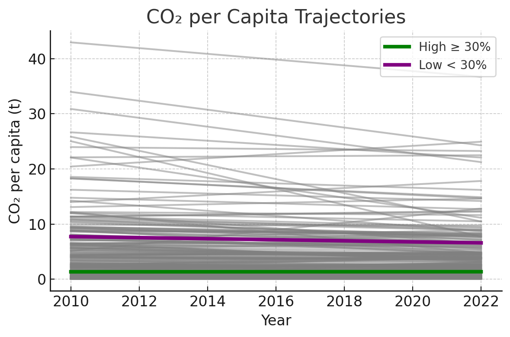
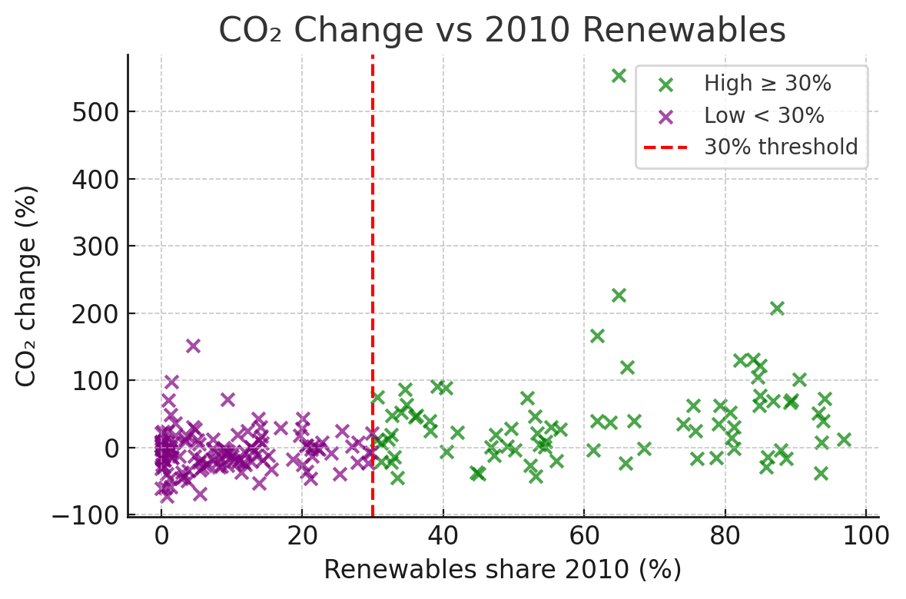
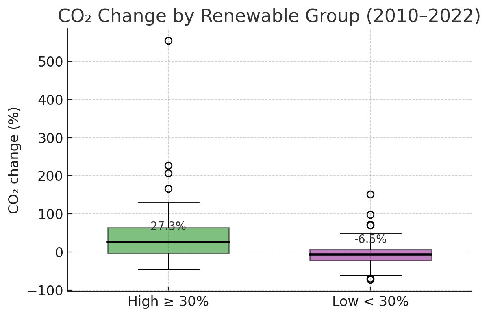

World map choropleth

Green countries had ≥30% renewables in 2010; red had below 30%, highlighting early adopters.
How early renewable adopters fared in cutting per-capita emissions.
Deploying renewables early displaces fossil fuels, directly lowering CO₂ output. The IPCC’s 2023 AR6 report stresses that global emissions must drop steeply this decade to avert worst-case warming1. The IEA’s 2024 Renewables Report underscores renewables’ central role in meeting net-zero goals2. Examining per-capita emissions uncovers equity gaps—high-income nations drive per-person CO₂ far above the global average, even as total emissions statistics improve3.
Countries whose renewable-energy share was ≥ 30 % of final energy in 2010 experienced slower growth in per-capita CO₂ emissions from 2010 to 2022 than countries below that threshold.
renew_2010, renew_2022, co2pc_2010, co2pc_2022.co2_change_pct = ((co2pc_2022 – co2pc_2010) / co2pc_2010) × 100.renew_2010 ≥ 30%, else Low < 30 %.
Green countries had ≥30% renewables in 2010; red had below 30%, highlighting early adopters.

Lines show each country’s CO₂ path; early renewable adopters (green) generally have flatter slopes.

Scatter plot reveals that higher 2010 renewables share often corresponds to lower emissions growth.

High-adopter group (≥30 %) has a lower median and narrower spread of CO₂ change than Low group.